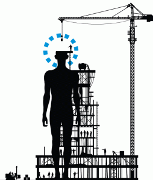

18 dicembre, 2014 | di Sergio Farruggia
I geo-dati sono come un ordito per tessere città “smart†e la geo-ICT inonda di applicazioni l’ecosistema della città intelligente; la governance dei processi “intelligenti†si basa sulla cooperazione tra gli attori coinvolti secondo un modello a rete. Perché non pensare di inserire negli organismi d’indirizzo di ogni smart city -prima che per legge, come scelta di buon senso- la figura professionale del Geographic Information Manager?

L’idea del GIM è presa per analogia con l’energy manager, professione di cui si è incominciato a parlare nei primi anni ’80, dopo le note crisi petrolifere degli anni ‘70. Il modello seguito per questa -ormai radicata- professione potrebbe essere adattato al mondo delle Smart City, per sostenere in questo contesto l’uso consapevole dei geo-dati e delle relative tecnologie disponibili.
Potremmo identificare il Geographic Information Manager come un esperto di settore, il cui compito fondamentale sia quello di favorire l’incremento del livello di qualità e competenza tecnica all’interno del network che costruisce una comunità intelligente, nei riguardi delle tematiche legate alla capacità di fruire dei dati territoriali (spatial enablement), sia intesa rispetto alla disponibilità di queste informazioni, sia come abilità conseguite per il loro sfruttamento.
Tra settore energetico e quello dell’informazione geografica esistono ovviamente innumerevoli differenze. Mi sono lasciato però suggestionare da due caratteri comuni. Per entrambi gli ambiti –questo è il primo aspetto- i percorsi di studio che consentono di acquisire le conoscenze di base, nell’uno come nell’altro settore, possono essere diversi: la preparazione teorica è un prerequisito ma conta assai di più il successivo percorso di specializzazione, soprattutto on the job. La seconda caratteristica è la sensibilità culturale iniziale della classe dirigente del Paese nei confronti delle problematiche e delle opportunità di cui il primo è stato portatore, assai simile a quella mantenuta, almeno finora, nei riguardi delle istanze del settore dei dati geografici digitali.
Sappiamo che produzione e gestione dei dati geografici sono attività complesse, comportano costi consistenti; essi hanno potenzialità di riuso assai marcate e, infatti, sono i dati tra i più richiesti della PA: quelli disponibili hanno però un livello di fruibilità ancora insoddisfacente.  Guardare alle informazioni geografiche come a una sorta di “forma di energia†può aiutare una comunità “smart†a comprendere meglio quanta ne produce, quanta ne utilizza, per che fini e –soprattutto- con quale “rendimentoâ€, cioè qual è e a quanto ammonta la quantità che si spreca ecc., ecc.
Il ruolo dell’energy manager è stato introdotto per legge: la 10/1991, ha stabilito infatti che i soggetti (enti pubblici e privati) caratterizzati da consumi annui di energia al di sopra di una data soglia, debbano nominare un tecnico per “la conservazione e l’uso razionale dell’energiaâ€. Tale norma è stata, a più riprese, ampliata e diffusa ad altre funzioni. Come in occasione del recepimento della direttiva 2006/32/CE, riguardante l’efficienza degli usi finali dell’energia e i servizi energetici: all’energy manager il legislatore ha affiancato l’esperto in gestione dell’energia (D.Lgs. 115/2008). Inoltre, questa seconda legge ha introdotto anche una procedura di certificazione volontaria, descritta in una norma tecnica, la UNI-CEI 11339:2009.
Lo scorso luglio, tale certificazione è stata resa obbligatoria (D.Lgs. 102/2014, “Attuazione della direttiva2012/27/UE sull’efficienza energeticaâ€) sia nei riguardi dell’esperto in gestione dell’energia, con riferimento allo svolgimento di alcuni compiti, sia rispetto agli enti pubblici e privati indicati dalla legge 10/1991; essi, per continuare a beneficiare di riconoscimenti economici derivati da azioni di risparmio energetico adottate, dal 2016 dovranno nominare energy manager che abbiano acquisito la citata certificazione.
Un argomento da considerare –per l’idea del GI Manager- riguarda l’evoluzione delle modalità di gestione dell’elenco degli energy manager (non è un albo) e della formazione di questi professionisti. La legge del ‘91 si è limitata a stabilire che L’Agenzia per l’Energia (ENEA), dovesse provvedere -attraverso convenzioni con le Regioni- all’aggiornamento dei tecnici. L’introduzione della certificazione ha indotto il coinvolgimento di diversi organismi. Ovviamente, l’ENEA ha ampliato il proprio ruolo: attraverso la Federazione Italiana per l’uso Razionale dell’Energia, FIRE, iniziativa di cui è stata promotrice, gestisce dal 1992 la rete degli energy manager, su incarico del Ministero dello Sviluppo Economico. Più recentemente (2008), FIRE ha costituito una struttura interna dedicata alla certificazione delle competenze degli Esperti in Gestione dell’Energia: il SECEM (Sistema Europeo per la Certificazione in Energy Manager). Inoltre, il D.Lgs. del luglio scorso, assegna ad Accredia, organismo nazionale di accreditamento, la predisposizione degli schemi di certificazione e accreditamento e all’Ente Italiano di Normazione, UNI, l’elaborazione delle norme tecniche per la certificazione, indicando agli stessi di avvalersi della collaborazione del Comitato Termotecnico Italiano, di GSE SpA (Gestore dei Servizi Energetici, società del Ministero dell’Economia e delle Finanze), oltre che dell’ENEA.
Ma se i tempi necessari per vedere all’opera un GIM fossero dell’ordine di un decennio, come avvenuto per l’energy manager, non potremmo certamente essere soddisfatti. Inoltre, come si può appurare consultando i siti dedicati all’argomento, l’introduzione di questa figura per legge, seppur sostenuta da associazioni di settore, non ha garantito di per sé una sua diffusione consapevole e sempre efficace. Negli anni immediatamente successivi l’entrata in vigore della norma istitutiva, le aziende e le pubbliche amministrazioni interessate da questa normativa provvidero all’assegnazione di questi compiti affidandoli prevalentemente a tecnici già in staff alla struttura. Gli energy manager della prima ora erano tutti esperti nella materia? No, affatto. La legge non forniva indicazioni sul CV richiesto; inoltre, in molti ambienti l’attenzione dei vertici manageriali al tema energetico era scarsa, la disposizione normativa accolta come un’incombenza burocratica e, comunque, i professionisti competenti non erano molti.
Esistono però alcuni elementi che meritano di essere considerati. Rispetto al contesto degli anni ’80, oggi si può prevedere che il processo di promozione del GIM possa essere innescato e sostenuto facendo leva sulla partecipazione attiva di comunità in Rete, coalizzando nello specifico la comunità geomatica. E’ anche possibile prevedere di assegnare, per esempio, all’AgID un ruolo analogo a quello ricoperto da ENEA o, più precisamente, dalla FIRE. L’Agenzia per l’Italia Digitale è la naturale organizzazione cui fare riferimento per la gestazione della figura del GIM. Mi pare questa un’ipotesi che non dovrebbe suscitare perplessità o contrarietà nell’ambiente geomatico: l’Agenzia è l’organo deputato per l’applicazione delle strategie per la crescita digitale e, tra i diversi compiti, è impegnata per lo svolgimento del programma nazionale per la cultura, la formazione e le competenze digitali; ha coordinato il Comitato per le Regole Tecniche sui Dati Territoriale, best practice in termini di cooperazione interistituzionale ed ha riavviato recentemente i gruppi di lavoro tematici. Last but not least, in seno ad AgID è presente il comitato tecnico delle Comunità intelligenti, organismo che supporta le attività dell’Agenzia riguardanti questa materia tramite l’operato di quattro gruppi di lavoro, ognuno con specifici obiettivi.
L’iniziativa FIRE, si legge sul sito della federazione, ha avuto origine dalla convergenza di diverse esperienze associative, raccoglie soci che rappresentano tutti i comparti del settore e opera attraverso un nucleo di supporto fornito dall’ENEA. Trasferendo tale descrizione alla “Federazione Italiana per l’Informazione Geograficaâ€, non si dovrebbe creare l’ennesima associazione di questo settore: essa dovrebbe fungere da tavolo inclusivo di supporto ai GIM, in sintonia con gli indirizzi indicati dalle politiche per lo sviluppo delle competenze digitali, di cui AgID è il riferimento operativo.
I temi sui quali dovrebbe essere competente un GIM e per i quali, quindi, dovrebbe essere fornito supporto formativo, andrebbero approfonditi. Ne segnalo giusto due. L’applicazione del concetto “spatial enablement†al processo di una Smart City comporta l’esigenza di misurare il grado di aderenza a tale paradigma, per esempio valutare la capacità di PA, cittadini e imprese nell’uso dei dati territoriali per organizzare le loro attività e i modi di comunicare. La conoscenza dei punti di forza e dei limiti consente di definire le azioni da perseguire, le quali dovranno essere monitorate per seguirne l’attuazione, intervenendo per correggere eventuali scostamenti dai risultati attesi.
All’interno di questo tema, un GIM dovrà tenere sotto controllo e proporre azioni per migliorare la capacità di implementazione della direttiva INSPIRE, in sintonia con l’INSPIRE Maintenance and Implementation Framework approntato dalla Commissione Europea.
Il lavoro del GIM può far sì che la città -come “essere viventeâ€- impari a organizzare le informazioni geografiche tenendo presente i costi per generarle e permettendone l’utilizzo ogniqualvolta serve, a ogni utilizzatore, impegnandosi -e ingaggiando la città - per creare cicli d’informazioni geografiche sostenibili.
Il suo operato può inoltre avere degli effetti collaterali estremamente positivi. Da un lato generare una forte domanda per nuove professionalità legate proprio al mondo della GI, inducendo quindi la definizione di programmi formativi specifici sia in ambito accademico, sia post laurea. D’altro canto, le soluzioni individuate dai Big GIM potrebbero fungere da volano, stimolando grandi opportunità di crescita del mercato Geo-ICT.
foto di troybthompson
Posted in Entropia | 2 Comments »
19 gennaio, 2012 | di Sergio Farruggia
Quest’avventura ha ancora pochi mesi di vita, ma vale già la pena di essere raccontata. Tutto è nato da una mail ricevuta lo scorso maggio: “Ti scrivo perché con i colleghi, abbiamo deciso d’intensificare la collaborazione con alcuni siti blog del settore, aprendo il sito di GEOmedia a contributi diretti ed indirettiâ€. Seguì una chiacchierata telefonica, in cui si valutò interessante organizzare una teleconferenza con i corrispondenti blogger.
La riunione telefonica avvenne puntualmente un mese più tardi. Alfonso Quaglione –l’autore della mail- espose ai blogger invitati, tra cui noi di TANTO, le proposte della Rivista, per quale finalità erano nate, ecc. ecc. Si raccolsero le prime impressioni, i commenti e i contributi. Alcuni espressero perplessità ; emerse anche qualche critica. Luglio e agosto passarono, ancora tra qualche scambio di email, per puntualizzare punti di vista e per precisare meglio i dubbi.
Tralascio di soffermarmi sui distinguo. Quanto esporrò nel seguito prese infatti le mosse dalla constatazione che -in generale- tutti gli interventi fossero legati da un fil rouge, esprimibile in forma di auspicio: “Possiamo e dobbiamo continuare a parlarneâ€. Tra le idee e i possibili obiettivi espressi nella prima riunione virtuale di giugno, certamente questi trovavano ampia condivisione:
- portare i temi più importanti dell’informazione geografica anche all’attenzione dei non addetti ai lavori
- creare un network dell’informazione geografica.
Valeva quindi la pena provare a fertilizzare questo dialogo, innescato dall’apprezzata rivista di geomatica, cercando occasioni per collaborare in quella direzione condivisa, ripromettendosi di operare per attrarre l’attenzione e l’interesse di chi –singole persone e aggregazioni- ne avesse approvato le finalità .
E’ a questo punto che entra in scena “Stati Generali dell’Innovazione†–SGI. I promotori di questa iniziativa –di cui su TANTO abbiamo scritto ormai in diverse occasioni (leggi qui e qui)- erano impegnati negli stessi mesi nell’organizzazione di un evento che richiamasse la partecipazione di tutti i portatori d’interesse verso la costruzione di una prospettiva condivisa per un cambio effettivo nella politica dell’innovazione per l’Italia.
In sintesi, le cose sono andate così.
SGI è un’associazione –ha anche uno statuto- ma si presenta meglio come una rete di associazioni, organizzazioni, enti, gruppi e persone singole, unite da uno scopo ben preciso: “Fornire contributi alla classe dirigente per attuare scelte rivolte alla realizzazione di un sistema di innovazione diffusa, un’innovazione che nasca dalle comunità e che al benessere delle comunità , in quanto reti relazionali, economiche e sociali, sia principalmente rivolta.â€
Prendere parte alle attività di SGI è semplice e ci si può coinvolgere in modi diversi, con impegno differente: puoi visitare la pagina o iscriverti al gruppo FB; puoi seguire l’iniziativa su Twitter (@SGInnovazione); si può prendere parte alle discussioni avviate sui forum aperti sul sito dell’associazione, puoi restare connesso utilizzando gli RSS, iscriverti alla mailing-list; puoi aderire all’iniziativa, associarti -come organizzazione o singolo-, insomma i canali per ricevere informazioni e comunicare le proprie idee non mancano.
E’ sembrato –non a tutti, ma a più d’uno- il contesto appropriato per provare a individuare e proporre argomenti e idee riguardanti l’Informazione Geografica che –per il loro valore o per le interconnessioni con altri temi- destino attenzione all’interno di tale costituenda comunità e, per questa strada, vedere anche se potesse formarsi almeno un ordito di ciò che potrebbe poi diventare una rete geomatica “costituita dal bassoâ€.
Così, “zitti zitti, piano pianoâ€, senza fare confusione… un gruppetto di geomatici si è affacciato a SGI. Il primo –atteso- incontro pubblico ha avuto luogo il 25 e il 26 novembre scorsi. Come ho raccontato qua, l’esperienza è stata più che positiva: una conferma sia del clima partecipativo e collaborativo che traspariva già in Rete, sia di come i temi dell’Informazione Geografica possano essere accolti, recepiti e apprezzati in un contesto ICT generale e inquadrato sui contributi che tutti possiamo dare per raggiungere gli scopi per cui SGI è stata costituita.
La rete si sta formando
Il convegno di fine novembre è stato solo l’inizio, un buon inizio –scrivono gli organizzatori- per gli Stati Generali dell’Innovazione. L’esito, infatti, in termini di adesioni, partecipazione, temi affrontati e conclusioni a cui si è pervenuti, pongono già questa “meta-associazione†quale realtà con cui chi governa potrà confrontarsi e una risorsa per tutti coloro che vogliono produrre un vero cambiamento nelle politiche dell’innovazione del nostro Paese.
Il “gruppetto†nato grazie alle discussioni estive di cui vi ho raccontato, ha continuato a dialogare in Rete, si è un poco rafforzato e ha iniziato a interagire all’interno degli Stati.
SGI sta alacremente costruendo una roadmap per il 2012, la roadmap dell’Italia che innova. E’ stata già formalizzata la Consulta Permanente degli SGI, sono avviate attività sui temi principali e più urgenti individuati; si sta definendo un calendario di eventi per portare il confronto degli SGI su tutto il territorio nazionale e altro ancora.
Consultando le otto schede, per altrettante azioni, messe a punto nel corso dell’incontro di novembre, possono affiorare molti argomenti legati o affini alle tematiche dell’Informazione Geografica. Stati Generali dell’Innovazione offre quindi la possibilità di entrare in contatto con soggetti che assumono intrinsecamente l’IG quale componente delle risorse che possono contribuire all’innovazione del Paese. Un’opportunità nuova per cooperare nella promozione delle istanze del nostro settore, condividendo esigenze comuni. Per esempio, alcuni aspetti legati allo sviluppo delle Infrastrutture di Dati Territoriali a livello sub-nazionale si possono pienamente approfondire anche nell’ambito di un programma per promuovere il federalismo digitale, com’è stato articolato nella scheda “Inclusione digitale – Azione 1â€. Così pure, non riesco a pensare a un programma che persegua il modello delle smart cities (scheda “Creatività e conoscenza condivisa – Azione 2â€), senza “smart geo-data e smart geo-servicesâ€. Oppure ancora: quali contributi possono dare i geomatici rispetto al mutamento di modello di governance del settore pubblico, all’Open Government?
Vi sono processi in corso per cui potrebbe essere deleterio e controproducente lavorare a compartimenti. Credo sia allora un’opportunità quanto proposto dal programma per rendere pubblici e in formato aperto i dati della Pubblica Amministrazione (scheda “Open Government – Azione 1â€). Sarebbe assai curioso non trovare visi noti al Tavolo di lavoro sugli Open Data che verrà costituito nei prossimi mesi.
Un’ultima annotazione: come sempre, in questi primi giorni del 2012 le associazioni del nostro settore, così come enti e varie organizzazioni, sono certamente già impegnate nella preparazione di convegni, workshop, seminari con finalità tecnico-scientifiche, per promuovere progetti, con scopi divulgativi. Per alcuni temi e in alcune circostanze, verificare sinergie con SGI, verificare se vi possono essere motivi di arricchimento per la road map “dell’Italia che innovaâ€, potrebbe generare valore per l’iniziativa in corso di programmazione. Ugualmente, la geo-rete ipotizzata può essere portatrice di contributi geomatici nell’ambito di eventi organizzati da SGI e suoi associati.
 Fin qui l’attività di “apri-pista†che abbiamo svolto. L’idea iniziale degli amici di GEOmedia ha innescato un dibattito certamente utile. Se la partecipazione a Stati Generali dell’Innovazione che vi ho presentato sarà apprezzata e vedrà l’aggregazione e il coinvolgimento di altri attori della geomatica -associazioni, professionisti, blogger, imprenditori, …- essa sarà un segno di novità (di innovazione?) nell’ambito del nostro settore. SGI consente di presentare propri contributi, secondo gli interessi, la sensibilità , le esigenze di cui ognuno è portatore, per elaborare in modo condiviso e attraverso un processo inclusivo un programma per “l’innovazione nel governo dell’Italiaâ€, come risultato complessivo degli Stati Generali dell’Innovazione.
Fin qui l’attività di “apri-pista†che abbiamo svolto. L’idea iniziale degli amici di GEOmedia ha innescato un dibattito certamente utile. Se la partecipazione a Stati Generali dell’Innovazione che vi ho presentato sarà apprezzata e vedrà l’aggregazione e il coinvolgimento di altri attori della geomatica -associazioni, professionisti, blogger, imprenditori, …- essa sarà un segno di novità (di innovazione?) nell’ambito del nostro settore. SGI consente di presentare propri contributi, secondo gli interessi, la sensibilità , le esigenze di cui ognuno è portatore, per elaborare in modo condiviso e attraverso un processo inclusivo un programma per “l’innovazione nel governo dell’Italiaâ€, come risultato complessivo degli Stati Generali dell’Innovazione.
Posted in Entropia | 4 Comments »
28 novembre, 2011 | di Sergio Farruggia
Leggo nel comunicato (in draft) degli Stati Generali dell’Innovazione:â€Una strategia coerente di open data deve garantire: l’uso pubblico dei database di interesse nazionale con una particolare attenzione ai dati territoriali;â€.
 Gli Stati Generali dell’Innovazione si sono appena conclusi. Ho partecipato; là ho incontrato Renzo Carlucci, direttore di GEOMEDIA. Ci siamo tenuti compagnia, abbiamo seguito i vari interventi. Ogni tanto leggevo i suoi “cinguettii†sul grande schermo, alle spalle dei relatori. Entrambi leggevamo i contributi di chi interagiva in rete (per esempio, questo). Insieme abbiamo preso parte all’open talk sull’Open Government: per circa due ore, oltre 30 persone hanno ragionato, prima su una mappa mentale dell’Open Gov, quindi cercando di raccogliere proposte, come contributo per una road map di SGI.
Gli Stati Generali dell’Innovazione si sono appena conclusi. Ho partecipato; là ho incontrato Renzo Carlucci, direttore di GEOMEDIA. Ci siamo tenuti compagnia, abbiamo seguito i vari interventi. Ogni tanto leggevo i suoi “cinguettii†sul grande schermo, alle spalle dei relatori. Entrambi leggevamo i contributi di chi interagiva in rete (per esempio, questo). Insieme abbiamo preso parte all’open talk sull’Open Government: per circa due ore, oltre 30 persone hanno ragionato, prima su una mappa mentale dell’Open Gov, quindi cercando di raccogliere proposte, come contributo per una road map di SGI.
A proposito di proposte, ho portato con me agli SGI alcune slide, preparate con la “redazione†di TANTO e con alcuni colleghi del Consiglio Scientifico di ASITA. Le abbiamo “confezionate†prendendo spunto da due delle tre proposte che avevamo inoltrato per Agenda Digitale (TANTO ne ha dato conto qui). Le ho presentate e commentate durante l’open talk.
E’ quasi ovvio –per una road map dell’innovazione digitale- suggerire l’inserimento di un richiamo agli organismi nazionali deputati in materia di DB territoriali e di attuazione della direttiva INSPIRE.
Parlare invece di Infrastrutture di Dati Territoriali (IDT) fuori dall’ambiente geomatico onestamente è meno banale, sebbene agli interlocutori presenti agli SGI l’importanza assunta dai geo-dati per le politiche di sviluppo e innovazione, sia assolutamente chiara ed evidente. Ecco perché la presentazione si sofferma sulle IDT. Ai lettori di TANTO potrà essere già familiare l’analogia del ciclo dell’acqua: il ciclo sostenibile dell’IG è possibile se esiste una fonte energetica che alimenta e sostiene questo processo, proprio come il sole fornisce l’energia per l’acqua del mare. A proposito di sostenibilità , la presenza di Carlo Mochi, mi ha ricordato un suo editoriale del settembre 2006. Il titolo è “Verso una PA sostenibileâ€. Ho approfittato della possibilità di avere “a tiro†l’autore per chiedergli se, a suo avviso, quanto aveva scritto allora (il paradigma dell’Open Government non era diffuso) sia ancora attuale. Decisa e perentoria la risposta: “ASSOLUTAMENTE!â€. V’invito quindi, prima di continuare questa lettura, a seguire le riflessioni contenute in quello scritto. Io l’ho riletto rientrato alla base, prima di stilare questi commenti: è stato come un flashback. Alle IDT può essere applicato il concetto di
“produttività della PA, ossia di rapporto tra risorse impiegate e valore restituito ai cittadiniâ€.
Alcune slide sono ripetitive e non mi pare che necessitino di commenti: la creazione delle IDT consente di ridurre il disordine (quindi gli sprechi) e, nel contempo, favoriscono la comunicazione tra produttori e utilizzatori di dati geospaziali. Vorrei solo aggiungere che ragionare in termini di Value Chain potrebbe essere utile, ad esempio per razionalizzare gli sforzi all’interno della PA, migliorando la distribuzione di competenze e ruoli, anche in un’ottica di partenariato tra pubblico e privato.
Ma una “geo†proposta per una road map dell’innovazione digitale che consideri soltanto suggerimenti come quelli definiti per Agenda Digitale (slide 13 e 14), rischiano di risultare mere dichiarazioni d’intenti, condizioni soltanto necessarie per includere l’Informazione Geografica come componente per l’incremento di innovazione nel nostro Paese.
Attraverso un po’ di botte e risposte via mail è venuta a galla un’ulteriore proposta, quella descritta con le ultime slide. E’ giusto un esempio di azione più concreta, legata alla “vita†delle organizzazioni pubbliche. E’ articolata in tre passi:
-Â Â Â Â Â raccolta di buone pratiche (esistono, esistono  ! )
! )
-Â Â Â Â Â loro diffusione, accompagnata con iniziative di sensibilizzazione dei potenziali stakeholder e affiancamento delle organizzazioni interessate, per favorirne la corretta implementazione
e, soprattutto, terzo passo, recepimento delle azioni pianificate per creare:
- cicli di dati geografici “sostenibiliâ€,
- reti sistemiche tra i portatori d’interesse delle IDT e
- “sistemi di misurazione del livello di prestazione orientati al miglioramento continuo, alla valutazione degli impatti delle azioni pianificate e al confronto, in un’ottica di trasparenza, tra i servizi erogati dai diversi entiâ€
nei Piani Esecutivi di Gestione (P.E.G.).
Probabilmente, si potrà immaginare veramente avviato il cambiamento verso l’uso pubblico dei database territoriali… No –scusate- di tutti i database di interesse nazionale, soltanto quando leggeremo obiettivi di P.E.G. riferibili a queste tematiche, distribuiti verticalmente –dal vertice agli esecutori- e orizzontalmente –questi processi non sono prerogativa solo dei dipartimenti IT-  nonché report del “Controllo di Gestione†che contemplino tali argomenti.
Così come l’incontro degli SGI ha il valore di “prima tappa†di un percorso che si svilupperà nei prossimi mesi, come risulta dalle conclusioni riportate nel comunicato finale di questa “due-giorniâ€, anche il contributo che abbiamo provato a portare come settore IG può crescere e articolarsi. Repetita iuvant:
’Mi tornano alle orecchie le frasi conclusive pronunciate dagli esperti di Geospatial Revolution Project: “Stiamo facendo questo insieme …â€.’
Posted in Eventi | 7 Comments »
2 novembre, 2011 | di Sergio Farruggia

TANTO si è già occupato di Stati Generali per l’Innovazione, per esempio qui, e alcuni di noi partecipano alle discussioni iniziate sul forum del sito, su FB, su Twitter e altrove, in preparazione dell’evento previsto a Roma, il 25-26 novembre 2011.
Questo scritto unisce due miei post, pubblicati sul sito di SGI: qui e qui. Incontrandoci al “bar dietro al router†capita talvolta che uno di noi esclami frasi come: “Pensa tu quante idee su usi e applicazioni dei dati geospaziali ci saranno fuori dal ‘circolo dei geomatici’?â€.
L’appuntamento di Roma è un’occasione per l’incontro tra addetti ai lavori, portatori d’interessi e utilizzatori. Complice l’atmosfera concentrata sulle possibilità di crescita per il nostro Paese, potrebbero scoccare scintille a cui fornire carburante.
Perché partecipare a Stati Generali Innovazione
Le informazioni territoriali hanno assunto un ruolo strategico nelle politiche di sviluppo e innovazione di tutti i paesi industrializzati. Il ruolo dell’informazione territoriale è determinante in molti settori del sistema Paese: industriali (infrastrutture di trasporto, reti tecnologiche, ecc.), finanziari nonché agroalimentari per citarne alcuni. Naturalmente, esse sono indispensabili nel governo del territorio, ad esempio per la prevenzione di tutti quegli eventi – spesso catastrofici – che purtroppo colpiscono il nostro Paese e mitigarne i danni.
La Pubblica Amministrazione rappresenta generalmente il soggetto più rilevante nel processo di qualificazione della domanda e di acquisizione delle informazioni. Essa funge inoltre da volano in molti settori menzionati. Infine, le informazioni territoriali sono anche alla base delle tecnologie digitali che stanno cambiando il nostro modo di interagire con le persone e ciò che ci circonda: Location awareness, Digital interaction, Towards all things computing e Augmented reality… rivestendo quindi un peso rilevante per il futuro dell’economia digitale.
Una prima peculiarità delle informazioni territoriali è quella di essere molto onerosa in termini economici nella fase di acquisizione rispetto a quella di gestione e utilizzo. E’ fondamentale definire regole e standard perché essa, una volta acquisita, possa essere integrata alle altre fonti, anche integrando quelle informazioni provenienti ‘dal basso’, ovvero create dagli stessi utilizzatori (informazione geografica ‘volontaria’). E’ inoltre indispensabile che il sistema pubblico possa lavorare in modo collaborativo, ottimizzando i finanziamenti a disposizione, razionalizzando la produzione e la gestione di tali informazioni, evitando la creazione di duplicati da parte di enti/istituzioni differenti.
Un’altra peculiarità delle informazioni territoriali è quella di essere posseduta e mantenuta tra numerosi soggetti. E’ fondamentale incoraggiare la costituzione di infrastrutture per accrescere l’accesso e la disponibilità di geo-dati, la cui organizzazione sia basata sulla co-operazione: per l’integrazione e l’armonizzazione dei dati, per condividere le policy riguardanti la loro distribuzione. Occorre individuare modi che aiutino il ri-uso delle informazioni geo-riferite e la valorizzazione delle applicazioni della geomatica per tutte le sfide che attendono la nostra società , (ICT per l’ambiente, assistenza medica sostenibile, promozione della diversità culturale, eGovernment, mobilità di persone e merci, …).
Infine, una terza peculiarità delle informazioni territoriali è quella di essere essenziale per far prosperare la ricerca e l’innovazione del comparto: realizzare nuovi prodotti e servizi legati all’intrattenimento, alla mobilità individuale e collettiva, all’assistenza alle persone, ecc.; per la corretta comprensione dei fenomeni che avvengono nella realtà ; per creare nuove professionalità e nuove occupazioni. Rafforzare il dialogo tra il mondo della Geographic Information e l’ICT nella sua globalità può generare nuove idee per la ricerca e orientare le strategie per attuare servizi in scenari futuri, in contesti di complessità crescente, coinvolgendo i cittadini, soprattutto per rispondere alle esigenze delle giovani generazioni.
Il mondo dell’Informazione Geografica deve partecipare e contribuire –uno tra tutti- come portatore d’interesse per la costruzione di una prospettiva condivisa per l’Italia e per un cambio effettivo nella politica dell’innovazione, verso la realizzazione di un sistema di innovazione diffusa, un’innovazione che nasce dalle comunità e che al benessere delle comunità , in quanto reti relazionali, economiche e sociali, è principalmente rivolta.
Perché discuterne in Stati Generali Innovazione
A partire dall’epoca napoleonica fino agli anni ottanta del secolo scorso la gestione delle informazioni geografiche di una nazione sono state governate prevalentemente da soggetti statali: ad esempio Ordnance Survey – UK, Service du Cadastre – Francia; gli enti cartografici militari e catastali, dell’Italia unitaria).
Questa soluzione organizzativa ha assolto le esigenze per il governo del territorio sino a quando l’incremento della produzione di cartografica da parte di altri enti, soprattutto a livello regionale e locale, indotto da un maggiore fabbisogno di dati territoriali e di migliore qualità , supportata dall’avvento di nuove tecnologie, hanno fatto emergere l’esigenza di definire nuove modalità organizzative.
Dall’inizio degli anni novanta è iniziata la ricerca di soluzioni per razionalizzare la produzione dei dati territoriali tra i diversi livelli della Pubblica Amministrazione, originariamente in un’ottica molto pragmatica: ridurre l’impegno economico e garantire un uso più efficiente delle risorse per acquisire e gestire i dati geospaziali. Si deve alla presidenza Clinton la costituzione della National Spatial Data Infrastructure, nel 1994: una deliberazione per promuovere le relazioni intergovernative, coinvolgendo i governi statale e locale nella produzione di dati geospaziali e migliorare le prestazioni del governo federale. A seguire, altri Paesi hanno avviato progetti analoghi (Australia, Canada, Giappone, …). Nel 2002 la Commissione europea ha lanciato un progetto, denominato INSPIRE, che mira a creare una Spatial Data Infrastructure  europea.
Nel tempo, gli obiettivi di queste infrastrutture sono stati ampliati: si è fatta strada anche la promozione dell’uso dei dati geospaziali e del loro riutilizzo per molteplici scopi, non solo in ambito pubblico ma anche con crescente attenzione verso il settore privato, stante l’incremento di prodotti e applicazioni rivolte al mercato consumer.
Mentre questo processo è ancora in corso, nuovi temi sono apparsi, e influiscono sull’implementazione delle Spatial Data Infrastructure: espressi dal mercato (“l’uragano†Google maps), tecnologici (il semantic web, Internet of things, il cloud computing, …), sociali (Volunteered Geographic Information), del settore pubblico (Open Government).
Dato per scontato il coinvolgimento del mondo della geomatica in questo scenario, le sue implicazioni e le sue diramazioni offrono lo spunto per ampliare ad altri ambiti la discussione e il confronto sulle prospettive, le opportunità che si prospettano, come sfruttarle, come affrontare e risolvere le problematiche e le criticità che si presenteranno.
Ho volutamente affrontato l’argomento prendendolo “da distanteâ€. Le scelte per soddisfare i bisogni di informazioni geografiche di un Paese, sono state prese in passato (remoto e recente) dal livello politico, e non vi è ragione di immaginare un approccio differente: l’Informazione Geografica oggi, come le mappe in passato, sono un pilastro per il governo e lo sviluppo di un Paese. Proprio in ragione di ciò, essa è anche patrimonio della collettività . Seguendo l’invito di Stati Generali dell’Innovazione, l’estensione a un più ampio spettro di portatori d’interesse il dialogo sull’informazione geografica potrebbe dare contributi alla classe dirigente per attuare scelte rivolte “alla realizzazione di un sistema di innovazione diffusa, un’innovazione che nasce dalle comunità e che al benessere delle comunità , in quanto reti relazionali, economiche e sociali, è principalmente rivolta.â€
Posted in Eventi | No Comments »
28 agosto, 2011 | di Sergio Farruggia
Il titolo di questo post non è altro che la sintesi della mia reazione emotiva dopo aver ascoltato le conclusioni del quarto e ultimo episodio di Geospatial Revolution Project. All’epoca stavo seguendo –insieme al consiglio scientifico ASITA- un’iniziativa così detta “nata dal bassoâ€. Quelle conclusioni possono valere anche per l’Italia?
Agenda Digitale.org, è un’iniziativa promossa da un centinaio di personalità del mondo dell’ICT nazionale: dell’accademia, delle imprese e professionisti del settore. Lo scorso 31 gennaio costoro, autotassandosi, pubblicarono un appello sul Corriere della Sera, rivolto a tutte le forze politiche, “per sollecitare il loro impegno a porre concretamente il tema della strategia digitale al centro del dibattito politico nazionaleâ€.
Proposta lodevole, che ha ricevuto in poco tempo più di ventimila adesioni (speriamo anche di molti lettori di TANTO), ha innescato un processo partecipativo molto vivace e ha ottenuto il momento di massima visibilità pubblica in occasione del Forum PA, svoltosi a Roma in maggio.
I 100 giorni che sono intercorsi tra la comparsa della pagina sul Corriere e il convegno romano sono stati utilizzati dai coordinatori e animatori dell’iniziativa per raccogliere proposte organiche per un’Agenda Digitale per l’Italia. Lapalissiano il nesso con l’Agenda Digitale per l’Europa. Va chiarito che AD.org non nasce per scrivere alcun documento strategico: chiede alla politica (ai nostri rappresentanti politici) di provvedere. In quest’ottica, le proposte raccolte hanno semplicemente valore d’idee e suggerimenti.
Tra i “ventimila†aderenti, sono comparsi anche i nomi di alcuni componenti del consiglio scientifico di ASITA: un’opportunità quindi per seguirne insieme i progressi. Così, il 21 marzo, in occasione di un incontro organizzato a Milano per “lanciare†questo percorso partecipativo aperto a tutti gli interessati, ASITA ha espresso la volontà di adoperarsi per concorrere al buon esito dell’iniziativa. Seguendo quindi le istruzioni fornite, abbiamo stilato e sottoposto agli organizzatori tre proposte come associazioni del mondo dell’Informazione Geografica nazionale, riferite a tre degli otto pillar su cui si basa l’azione strategica della Commissione Europea.
La prima fa riferimento a: “Interoperabilità e Standardâ€. Si propone che un documento strategico per lo sviluppo del settore ICT nazionale richiami ruolo e compiti delle strutture istituzionali dell’Informazione Geografica già operative e costituite per seguire il processo di recepimento della direttiva INSPIRE (Infrastructure for Spatial Information in Europe).
Il secondo suggerimento ha per argomento lo sviluppo delle Infrastrutture per i Dati Territoriali (IDT) sub-nazionali. Esso è rivolto al pillar “ICT per le sfide socialiâ€, ovvero a quelle azioni che colgono i vantaggi offerti dall’ICT alla società .
Infine, abbiamo voluto dire la nostra anche nei riguardi di un terzo “pilastro†dell’Agenda Digitale europea, riferito a un tema ‘di una certa attualità ’, di cui leggiamo spesso, anche sulla stampa quotidiana: “Ricerca e Innovazioneâ€. Con quest’ultima proposta abbiamo presentato un invito agli estensori di un’eventuale Agenda Digitale per l’Italia, perché siano promosse e incoraggiate “azioni di diffusione e sensibilizzazione nei confronti dell’Informazione Geografica quale base comune di dato digitale, strategica per lo sviluppo di prodotti/servizi innovativi nonché di ricerche avanzate nel campo dell’analisi e della pianificazione del territorioâ€.
Queste tre proposte, insieme a tutte quelle pervenute (34 in tutto), sono state pubblicate on line l’11 maggio sul sito di Agenda Digitale e sono state inviate agli esponenti politici che hanno manifestato interesse per l’iniziativa e disponibilità a sostenerne le istanze (100 giorni dalla pubblicazione dell’appello!).
Prescindendo dai risultati, che forse scontano un po’ lo stato di emergenza in cui si trova il Paese (ma questa è un’altra storia), è stata un’esperienza stimolante e istruttiva per diversi aspetti. Ha osservato un organizzatore: “Penso che portare critiche sia semplice, così come anche fare affermazioni generiche di proposte non specificate (“bisognerebbe fare così…”). Molto difficile è invece metterle per iscritto in modo organico e coordinato e scadenzato nel tempo. Il risultato mi sembra di rilievo, soprattutto se si considera che proviene dal basso, senza alcuna struttura organizzataâ€.
Per noi del consiglio scientifico di ASITA è stato un esperimento per verificare se e come si possa interagire e collaborare con comunità e network più vaste ed eterogenee, in termini di campi d’interesse, discipline, professionalità e competenze.
In questo senso, i contenuti delle proposte formulate, vogliono essere esempi d’istanze specifiche del nostro settore che però concorrono sia all’eliminazione dei diversi digital divide, sia a sviluppare la cultura digitale, in quanto esse fanno riferimento a tecnologie che stanno cambiando il nostro modo di interagire, con le persone e con ciò che ci circonda. Esse sono d’interesse generale e potrebbero quindi essere accolte in un documento strategico dell’ICT nazionale.
Ma partecipare a iniziative promosse in contesti più ampi e raramente frequentati possono avere anche un’ulteriore stimolante risvolto. Possono aiutarci ad amplificare il dibattito sul ruolo dell’Informazione Geografica, portandolo anche fuori dai confini del nostro settore, apportando nuova linfa, aggiungendo punti di vista mai esplorati, creando feconde contaminazioni: in sintonia con le valutazioni, le indicazioni e i suggerimenti esposti al  Panel Discussion: E-government and the Digital Agenda, svoltasi nell’ambito della Conferenza INSPIRE 2011 (ad esempio da Karel De Vriendt o G. Pichler).
Sarebbe forse interessante se questa breve e circoscritta “sperimentazione†del consiglio scientifico ASITA –ad esempio in termini di metodo appreso ed esperienza partecipativa acquisita- si estendesse a più ampi spazi della comunità geomatica nazionale. Negli ultimi tempi sono emersi alcuni segnali stimolanti, in diversi contesti -“fisici e virtualiâ€-, forse ancora un po’ acerbi, che manifestano comunque un desiderio di “fare sistema†per promuovere l’Informazione Geografica.
In fondo, dipende da ognuno di noi: le occasioni in rete e nei luoghi fisici non mancheranno di certo. Mi tornano alle orecchie le frasi conclusive pronunciate dagli esperti di Geospatial Revolution Project: “Stiamo facendo questo insieme …â€. Cosa ne pensano i lettori di TANTO?
Excelsior!
Posted in News | No Comments »


{kind=link}